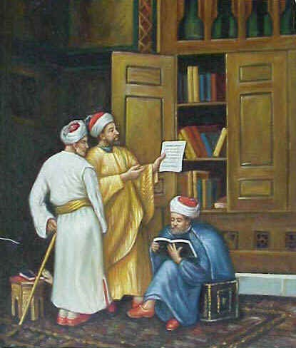

Merubah Peradaban dengan Pendidikan Islam
“Sedemikian pentingnya ilmu, maka tidak heran orang-orang yang berilmu mendapat posisi yang tinggi baik di sisi Allah maupun manusia.” (QS. Al Mujadilah (58) : 11)
Sembilan abad yang lalu, Baghdad adalah kota yang sangat maju di dunia. Tempat berbagai karya seni kelas atas dijual, Tempat sekolah-sekolah terbaik di dunia berada, dan sarang ilmuwan-ilmuwan jenius berkumpul. Baghdad menjadi kota yang paling maju di dunia. Baghdad menjadi kota yang sangat terkenal.
Tidak ada bukti fisik tentang Baghdad di zaman Dinasti Abbasiyah yang masih bertahan hingga hari ini untuk menunjukkan seperti apa keadaan di zaman dahulu, namun kita tidak kehabisan bukti dalam bentuk tulisan berbahasa Arab untuk menggambarkan kemewahan kota tersebut pada masa pemerintahan Dinasti Abbasiyah.
Hanya dalam beberapa dasawarsa saja dari pendirian kota Baghdad itu pada tahun 762, Baghdad menjadi salahsatu kota terhebat di seluruh dunia, bukan hanya dalam segi ukurannya, tapi juga dalam sudut pandang masyarakatnya yang sibuk, penuh energi, dan bercampurnya berbagai bangsa yang datang kesana dari segala penjuru dunia untuk tinggal dan bekerja di kota ini.

Pada masa itu, islam menampak awal puncak jeyaan. Islam bukan hanya menjamin kedamaian antar umat beragama, tapi pada masa ini jugalah masa keemasan ilmu pengetahuan lahir. Banyak ilmuwan-ilmuwan brilian yang sangat produktif bermunculan, dan bahkan banyak pula dari mereka seorang polymath.
Polymath adalah orang-orang jenius istimewa yang mampu menguasai tidak hanya satu, tapi beberapa bidang ilmu, sekaligus. Misalnya Ibn Sina, yang wajahnya terpampang di aula kehormatan Universitas Paris (Sorbonne). Atau Ibn Khaldun yang mahakaryanya ”Muqaddimah” dianggap jauh lebih hebat dan kompleks dari ”The Prince”, karya Machiavelli yang banyak diagung-agungkan di Eropa.
Pada masa-masa awal kebangkitannya, umat islam di Baghdad sangat giat menerjemahkan karya-karya ilmiah dari berbagai bahasa seperti Yunani dan Persia. Dan hampir secepat dimulainya proses penerjemahan, mereka mulai memikirkan tentang apa yang mereka baca dan membuat kontribusinya sendiri.
Pada abad ke-10, tidak banyak lagi yang bisa dipelajari dari masa lalu. Banyak perkembangan sains tidak hanya terjadi di Baghdad tetapi di seluruh penjuru kekhalifahan. Keberhasilan Jabir bin Hayyan (Geber) dalam ilmu kimia, Musa al-Khawarizmi dalam matematika dan Abu Bakar ar-Razi (Rhazes) dalam ilmu kedokteran sangat menonjol tetapi masih banyak lagi yang lain dalam sejumlah bidangnya.
Ini adalah contoh kecil betapa indahnya Islam. Saat dunia digenggam kekuasaan islam, kedamaian menjadi ciri khasnya, toleransi antar umat beragama menjadi bagian dari kehidupan, perkembangan ilmu pengetahuan menjadi sangat pesat, dan sains dapat dipelajari oleh siapa saja bagi mereka yang benar-benar memiliki keinginan kuat. Ini adalah salah satu gambaran hasil dari pendidikan islam yang menakjubkan. Karena islam sangat menghargai ilmu, dan islam juga mewajibkan semua umatnya untuk belajar.
Inilah buah dari indahnya pendidikan islam, yang ketika itu berhasil membangun peradaban yang sangat maju dan kaya-raya. Dan bila kita mau peduli, ini juga akan memberi kita peluang untuk membangun peradaban yang baru, yang lebih maju dan lebih hebat. Yaitu peradaban yang semua elemen didalamnya berbasis ketentuan islam, termasuk pendidikan.
Ada Banyak Hal yang Harus Diperbaiki
Saat ini, begitu banyak permasalahan dari berbagai dimensi kehidupan terjadi. Nilai-nilai moralitas dianggap aneh, kejahatan menjadi hal yang biasa, korupsi menjadi budaya, dan perkelahian antar pelajar menjadi makanan sehari-hari media. Pendidikan menjadi tidak begitu terlihat mendidik.
Memang kita harus akui bahwa masalah pendidikan adalah masalah yang sepertinya nyaris tak kunjung usai. Belum terselesaikan masalah yang satu, muncul lagi masalah yang lain. Dari mulai biaya sekolah, kondisi gedung sekolah, kurikulum pendidikan, atau nasib tenaga pengajarnya.
Mahalnya sekolah bagi sebagian besar masyarakat indonesia membuat pendidikan hanya untuk dinikmati sebagian kecil dari mereka. Bangunan sekolahnya pun masih banyak yang tak layak.
Dan yang cukup membuat sedih adalah, berita bahwa banyak dari sarjana kita yang mengaggur. Bahkan sampai ada berita yang cukup memilukan, yang dialamai seorang yang konon lulusan terbaik dari suatu universitas di sebuah provinsi, ia mengeluh karena pekerjaan yang ia dapat justru hanya menjadi seorang tukang sapu. Sungguh menyedihkan, bila banyak lulusan pendidikan kita saat ini pola pikirnya masih pendek.
Kenyataan ini memang terihat berat. Tapi kita tidak boleh berputus asa, justru situasi ini adalah peluang kita untuk berkarya dan melakukan perubahan.
Jika kita ingin kondisi ini benar-benar berubah dengan jauh lebih baik, kita harus melakukan sesuatu pada akar semua permasalahan yang kompleks ini terjadi, yaitu sistemnya. Kita harus merevisi sistem pendidikan yang ada. Bagi sebagian orang ini terlalu meangawang-awang, tetapi bagi siapapun yang berani melakukannya pasti akan membuat perubahan besar.
Caranya? Pelajari sistem pendidikan yang pernah membawa umat manusia pada masa keemasan, peradaban yang diakui sebagai salahsatu puncak tertinggi peradaban umat manusia. Yaitu zaman “1001 malam” saat islam berjaya, saat pendidikan islam diberlakukan dengan total.
Mengapa Sistem Pendidikan Menjadi Penting
Allah SWT memberi kita sesuatu yang sangat berharga yang tidak diberikan kepada banyak makhluk lainnya, yaitu akal pikiran. Akal manusia lah yang menjadi perangkat keras pada setiap sejarah umat manusia. Mereka berkembang, mereka mempelajari, mereka membuat berbagai penemuan. Dan semua itu dihasilkan dari penggunaan tools yang sama yaitu akal pikiran, otak, intelegensia, atau apapun namanya yang membuat kita dapat melakukan aktivitas berpikir.
Dan ini bukan hanya bagian dari kelebihan yang kita miliki, akal juga menjadi bagian dari kebutuhan kita. Kita butuh berpikir, kita butuh belajar, kita juga punya rasa ingin tahu akan sesuatu, kita butuh pendidikan. Tidak ada manusia yang bodoh, dan karena Allah maha mengetahui maka Ia tak akan terima bila ada manusia yang pasrah pada kebodohan.
Semua peradaban maju lahir berbasis pada hal yang sama.. revolusi dari cara berpikir manusia. Revolusi ilmu pengetahuan, kepercayaan, atau politik. Semua kebangkita besar besar yang pernah ada didunia, dari mulai masa kejayaan Yunani, masa keemasan islam, Renaissance, revolusi industri, sampai restorasi meiji.. semuanya membuat revolusi pada sektor pendidikan. Dan bila kita ingin membangun peradaban yang baru, kita tidak mungkin dapat melakukannya bila tidak begitu peduli pada sistem pendidikan. Dan inilah salah satu alasan utama, mengapa pendidikan sangat penting. Dan mengapa pendidikan menjadi patut untuk diberi perhatian lebih.
Mengapa Pendidikan Islam Menjadi Pilihan Terbaik?
Islam mengajarkan kita sistem pendidkan yang ideal. Sistem pendidikan yang sangat menghargai ilmu, sistem pendidikan yang sangat menghargai profesi guru, sistem pendidikan yang sangat menghargai para ulama. Maka tidak heran bila banyak ayat al-Quran yang menantang kita untuk berfkir. “Tidakkah kamu berpikir?”, “samakah orang yang berilmu dengan yang tidak berilmu?”. Islam benar-benar menghargai ilmu pengetahuan.
Inilah sari patinya. Sistem pendidikan yang benar-benar menghargai pengetahuanlah yang akan membuat banyak perubahan dalam kehidupan manusia. Inilah yang harus kita tekankan, karena sayangnya yang kita rasakan saat ini banyak praktek pendidikan saat ini lebih cenderung menghargai ijazah dan uang ketimbang ilmu pengetahuan, inovasi, dan penemuan. Khususnya justru di negara-neraga dunia ketiga, termasuk Indonesia.
Islam tidak membeda-bedakan perlakuan hukum orang berdasarkan agama, semuanya diperlakukan adil dan sama derajatnya. Islam sangat menganjurkan umatnya untuk menggali sebanyak-banyaknya ilmu pengetahuan. Tidak peduli ia seorang laki-laki atau perempuan, masih kecil atau sudah sangat tua, orang miskin atau orang kaya. Semuanya wajib menuntut ilmu.
Bayangkan, bila sistem pendidikan yang ada adalah sistem pendidikan yang sangat menghargai ilmu, sangat menghargai ilmu, yang menuntut semua masyarakatnya untuk bisa menuntut ilmu, apapun caranya.. bayangkan bila peluang pendidikan kita tidak lagi dibedakan berdasarkan harta dan tahkta, tapi seberapa besar keinginan untuk menuntut ilmu. Bayangkan bila sistem pendidikan tidak hanya mewajibkan masyarakatnya untuk menuntut ilmu, tapi menekankan bahwa menuntut ilmu adalah bagian dari kebutuhan.
Maka, tidak akan ada lagi yang tidak sekolah karena tidak cukup uang. Maka tidak ada lagi suap-menyuap. Maka tidak ada lagi yang tidak mau menjadi guru, maka tidak ada lagi yang tidak mau belajar. Dan ketika nilai-nilai ini hidup, peradaban besar yang lebih maju tinggal meunggu waktu.
Karena Kita Punya Tugas Hidup yang Mulia
Mengapa menuntut ilmu sangatlah penting? Karena ini adalah bagian dari tugas hidup kita. Kita , umat manusia punya tugas hidup yang mulia. Memang mpa tujuan kita menjadi diturunkan dibumi? Apa tujuan manusia dijadikan khalifa di Bumi?
“Dan Dialah yang menjadikan kamu penguasa-penguasa di bumi dan Dia meninggikan sebahagian kamu atas sebahagian (yang lain) beberapa derajat, untuk mengujimu tentang apa yang diberikan-Nya kepadamu.” (QS: Al-An’am :165)
Ayat ini menjelaskan bahwa Allah telah menjadikan manusia sebagai penguasa dan pemimpin di bumi. Itulah amanah yang dimaksud tadi. Kita semua adalah pemimpin, dalam kapasitasnya masing-masing.
Ajaran islam menghendaki amanah alam semesta dan seisinya untuk kepentingan seluruh umat manusia, serta menjaganya dari kerusakan. Memebrikan yang terbaik bagi umat manusia yang lainnya, dan memebri manfaat bagi mereka. Karena inilah tugas kita: memakmurkan dunia.
Maka, makmurkanlah dunia, jadikan hidup untuk bisa bermanfaat pada banyak umat manusia lainnya. Dan jangan harap itu bisa dilakukan bila kita tak mau menuntut ilmu, dan tak begitu peduli pada pendidkan. Apa kita tidak malu dengan para pendahulu kita yang dulu berjuang sangat keras untuk menggapai kejayaan islam?
Rasulullah pun pernah bersabda, “Tuntutlah ilmu sampai kenegeri china”
Ini adalah motivasi yang sudah berabad-abad menjadi alasan mengapa banyak ilmuwan kelas dunia diwaktu lampau begitu giat mencari ilmu. Mereka berhijrah, melakukan perjalanan jauh untuk menuntut ilmu. Karena muslim sejati adalah muslim yang mencintai ilmu.
Pendidikan islam telah membuktikan banyak hal yang menakjubkan terjadi. Jawaban mengapa hari ini tidak begitu terlihat kembali kekuatan ini adalah karena sebagian besar dari kita saat ini tertidur. Baik dalam arti konotasi ataupun denotasi.
Ilmu pengetahuan menjadi bagian penting dalam ajaran islam. Islam sangat menghargai ilmu pengetahuan, dan sangat menuntut umatnya untuk menggali ilmu sedalam-dalamnya. Pendidkan yang mencintai ilmu, inilah salah satu esensi terpenting dalam pendidikan islam. Dan para pendahulu kita telah membuktikan manisnya buah pendidkan islam ini. kita pernah membangun peradaban terhebat dalam sejarah manusia. Dan dunia pun mengakuinya. Maka, jangan heran bila yang Mulia pangeran Charles dalam pidatonya di Oxford University, 27 oktober 1993, pernah berkata :
“Bila ada banyak kesalahpahaman di dunia Barat tentang hakikat Islam, maka banyak juga ketidaktahuan tentang utang kebudayaan dan peradaban kita kepada dunia Islam. Saya rasa ini adalah kegagalan yang berakar dari ditutupinya sejarah yang kita warisi selama ini.”